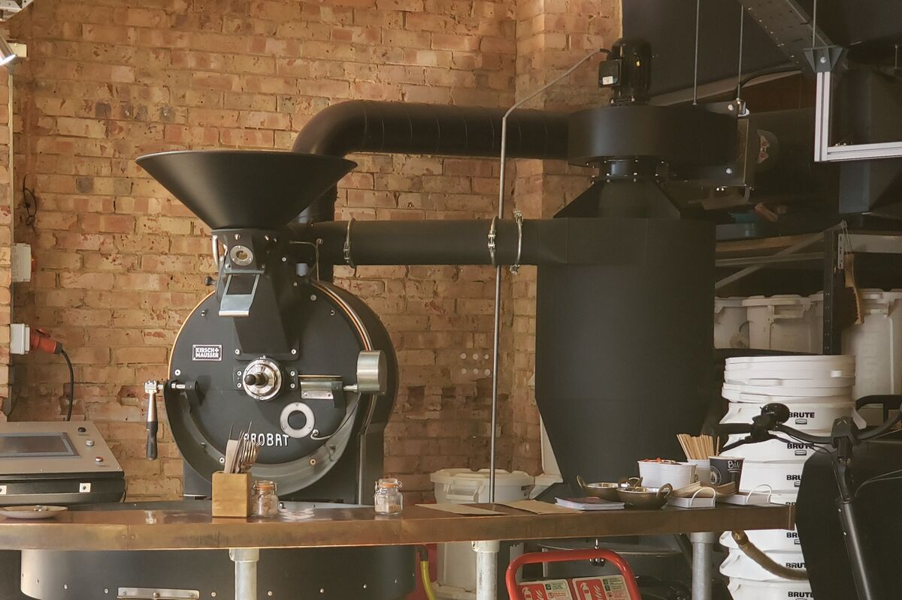
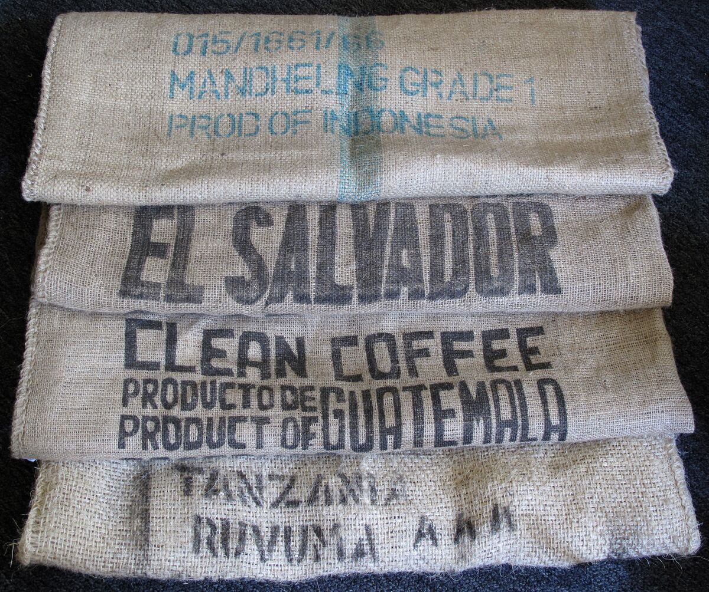
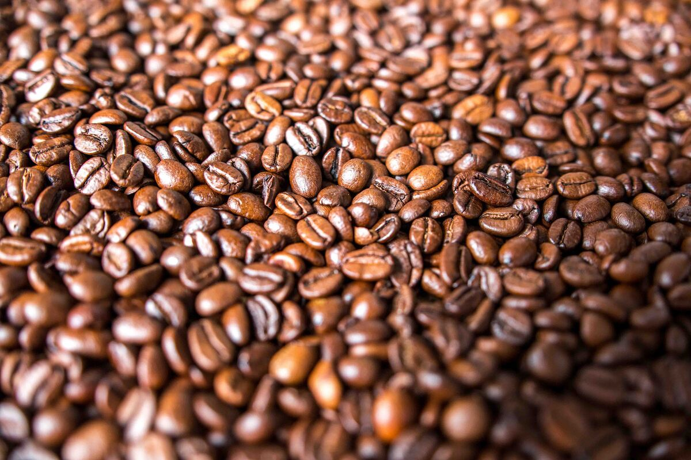

Tuesday is roast day
People picture roasting as a lot of sniffing and listening. Most of the day is warming up a machine, weighing things and writing numbers down. Here is last Tuesday, more or less as it went.

We roast once a week, on Tuesdays, on a Probat P12 that we bought second-hand in 2021. Everything we sell that week comes out of those seven or eight hours. This was last Tuesday, 15 September.
6.40am
Lights, extraction fan, then the burner on a low flame. The roaster takes about forty minutes to heat through evenly. If you rush it, the first two batches roast faster than the rest and you spend the morning chasing them. I use the time to read the order sheet Dev printed on Monday night and to weigh out the green coffee into buckets.
This week's sheet asked for 77 kg of roasted coffee:
- 41 kg of Neepsend, our house espresso, for the cafés and the subscriptions
- 16 kg of Los Naranjos from Colombia
- 12 kg of the washed Bona from Sidama
- 8 kg of decaf
Coffee loses around 15% of its weight in the roaster, mostly water, and decaf loses a bit more. So 77 kg roasted means about 91 kg of green. The machine is rated for 12 kg a batch, but it roasts more evenly at 9 or 10, so that's ten batches.

7.20am, the first batch
The first batch is always Neepsend. Even with a long warm-up, batch one behaves a little differently from batch two, and a blend hides that best.
I charge the drum at 205°C with 9.6 kg of green. The probe drops to around 95°C as the cold beans go in and turns back up after about a minute and a half. The beans go from green to yellow at about 4:45 and smell of toast and hay. First crack, the popping sound when the beans release steam and gas, comes at about 8:40. For espresso I drop the batch at 10:50, at 212°C.
Our laptop runs Artisan, the free roast logging program, and draws each batch over a reference curve. I still write the four key numbers on a paper sheet too: charge temperature, first crack time, drop time and drop temperature. If first crack lands more than 20 seconds away from the reference, I write down why. Usually it's the weather. Damp days roast slower.
Most of a roast day is warming up, weighing and writing things down. The part people imagine takes about ninety seconds a batch.
8.00am to 11.30am
Each batch drops into the cooling tray, where an arm stirs it while a fan pulls room air through for four minutes. This is when the unit smells the way people expect a roastery to smell. The rest of the day it mostly smells of hot metal and the chaff bin.
Then the batch gets weighed. Batch 3 came out at 8.19 kg from 9.6, a loss of 14.7%. Anything outside 14% to 16.5% for Neepsend goes in a separate tub and gets tasted on Wednesday before it's allowed near a bag. This week nothing did.

Between batches there are about three minutes to brush out the cooling tray, check the chaff collector and load the hopper. I don't drink coffee on roast days until the last batch is out. Every time I've tried, I've lost track of a batch.
11.30am, the light roasts
Los Naranjos and the Bona roast lighter, for filter, so I let the drum drop to 198°C before charging. The Bona goes in at only 7.1 kg. It's a small, dense bean that roasts unevenly in a full drum, and two smaller batches taste better than one big one.
Light roasts are where a few seconds matter. On the second batch of Los Naranjos I dropped it at 10:32 instead of 10:40 because the bean colour was already where I wanted it. I'll taste both batches side by side on Wednesday to see if I was right.
1.30pm, decaf and cleaning
Decaf goes last. It browns faster and looks darker than it tastes, and I'd rather not be comparing it by eye with anything else. Then the burner goes off, and the drum keeps turning for half an hour while it cools. I empty the chaff collector, vacuum the cooling tray and wipe down the scales. Last of all I check the afterburner log. The council inspected it in 2022, and our neighbours are a joinery and a climbing wall. Neither has ever complained, and I'd like to keep it that way.
What happens next
The coffee rests overnight. Freshly roasted coffee is full of carbon dioxide, and it brews unevenly until some of that has come out, so "roasted this morning" is less of a boast than it sounds. Dev packs on Wednesday. This week that was about 180 retail bags, plus the tubs for the cafés. The van goes out on Thursday, and the posted orders go to the Royal Mail depot on Wednesday afternoon.
If you'd like to see the roaster running, we open the unit on the first Tuesday morning of each month. The details are on the contact page.